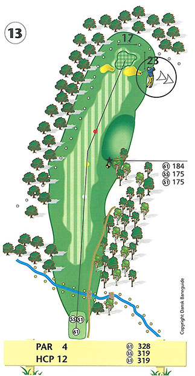
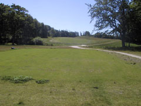

<div class="pages">
  <div data-page="hul13" class="page navbar-fixed toolbar-fixed" >
    <div class="navbar">
      <div class="navbar-inner">
        <div class="left">
          <a href="#" class="link back icon-only"><i class="icon icon-back"></i></a>
          <!-- <a href="#" class="back link icon-only"><i class="icon icon-back"></i></a> -->
        </div>
        <div class="center">Hul 13</div>
        <!-- <div class="right"></div> -->
        <div class="right">
        </div>
      </div>
    </div>
    <div class="page-content" style="padding-top:45px;">
       <div class="content-block">
          <center></center>
          <p>13. hul er et rimeligt kort, men tricky par 4 hul.</p>
          <center></center>
          <p>Udslaget over bækken presses ofte til højre af den lille skov i venstre side og vil efterlade dig et blindt indspil til green på grund af den høje bule i landskabet til højre for fairway. Venstre side er out of bounds.</p>
          <p>Indspillet til en af banens mindste greens skal være uhyre præcist for ikke at ende i en af de to velplacerede bunkere. Ydermere lurer faren for out of bounds umiddelbart bag green. Hvis du ønsker at spille sikkert, er det en god ide at spille kort af green og dermed tage forhindringerne ud af spil.</p>
          <p>Giv dig god tid til at læse green, inden du putter!</p>
          <p>For lav-handicapperen er et langt draw vejen til success. Indspillet bør være så højt som muligt og bolden landes i forkant af green. Vær opmærksom på de to bunkere, da de ikke kan ses på afstand.</p>
          <p>Hulsponsor: <br />
          <br /><br />
          Bænksponsor:<br />
          
          </p>
        </div>
    </div>
    </div>
    </div>
  </div>
</div>
